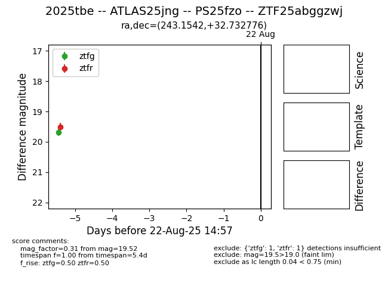

Target 2025tbe at 2025-08-22 16:56, see:
FINK: fink-portal.org/ZTF25abggzwj
Lasair: lasair-ztf.lsst.ac.uk/objects/ZTF25abggzwj
ALeRCE: alerce.online/object/ZTF25abggzwj
TNS: wis-tns.org/object/2025tbe
YSE: ziggy.ucolick.org/yse/transient_detail/2025tbe
alt names
ZTF25abggzwj (ztf,alerce)
2025tbe (tns,yse)
PS25fzo (panstarrs)
ATLAS25jng (atlas)
coordinates:
equatorial (ra, dec) = (243.1542,+32.73278)
galactic (l, b) = (52.9822,+46.45495)
photometry
last atlaso=19.51, ps1::g=20.01, ps1::i=19.61, ztfg=19.68, ztfr=19.52
1 atlaso, 3 ps1::g, 1 ps1::i, 1 ztfg, 1 ztfr detections
